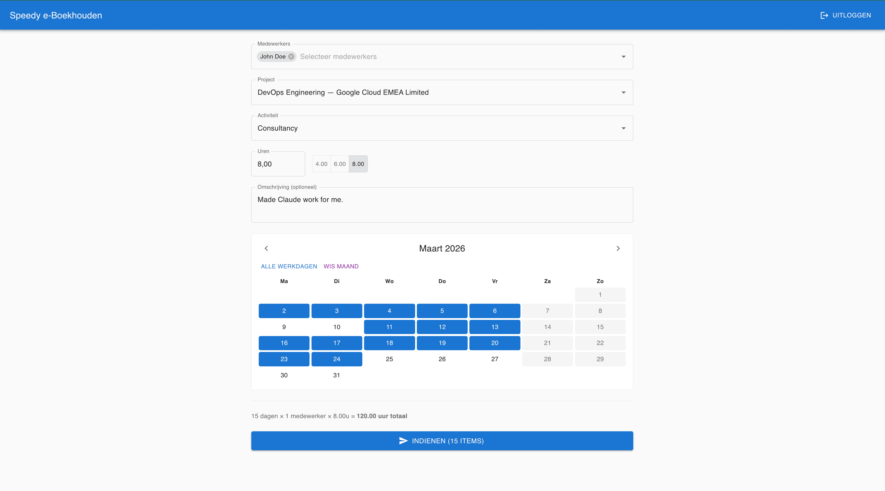
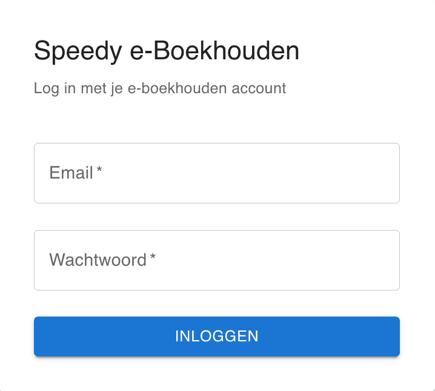
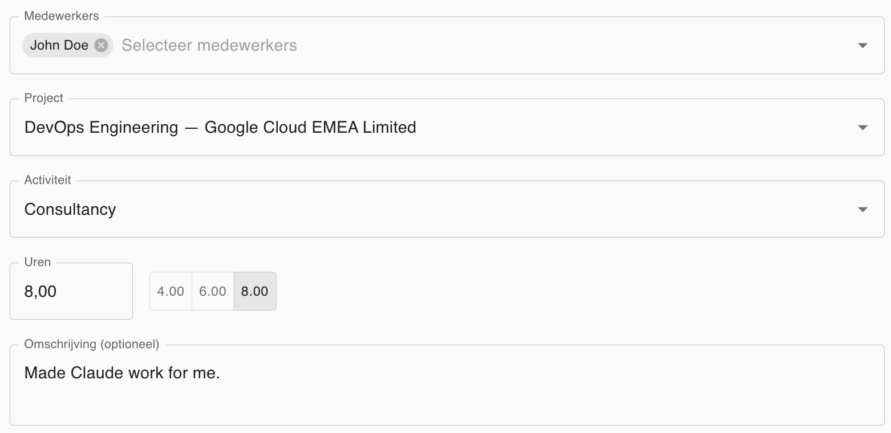
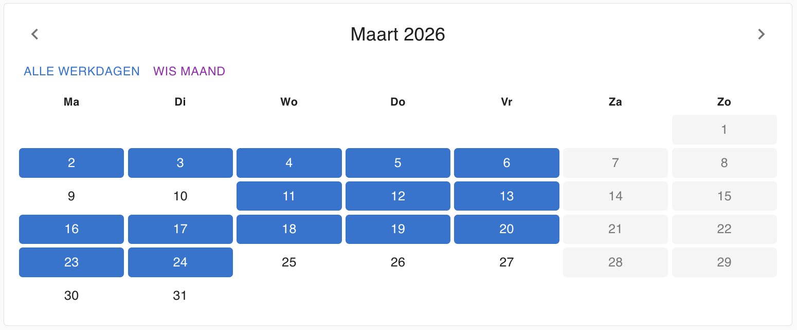
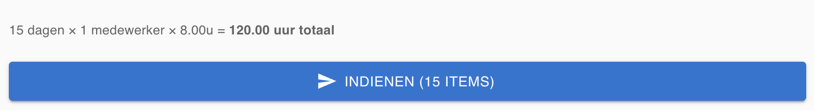

Stop met klikken.
Start met werken.
Uren invoeren in e-boekhouden.nl kost je 15 klikken per dag per medewerker. Met Speedy doe je een hele maand voor je hele team in minder dan 30 seconden.
Log in met je bestaande e-boekhouden.nl account. Geen registratie nodig.

Vergelijking: met en zonder Speedy
Zonder Speedy
- Datum selecteren
- Medewerker kiezen
- Project zoeken
- Activiteit selecteren
- Uren invullen
- Opslaan
- Herhaal dit voor elke dag...
- ...en voor elke medewerker
Met Speedy
- Selecteer medewerker(s)
- Kies project + activiteit
- Klik de dagen aan
- Verzenden
Alles wat je nodig hebt
Gebouwd door e-boekhouden gebruikers, voor e-boekhouden gebruikers.
Meerdere medewerkers
Selecteer een of meerdere medewerkers tegelijk. Dezelfde uren worden voor iedereen ingevoerd.
Kalenderselectie
Klik op individuele dagen, of gebruik Shift+klik voor een bereik. "Alle werkdagen" selecteert ma-vr in één klik.
Razendsnel
Meerdere uren worden gelijktijdig verstuurd. 20 dagen voor 3 medewerkers? Klaar in ~20 seconden.
Slim zoeken
Zoek projecten op naam of bedrijfsnaam. Geen eindeloos scrollen door lange lijsten meer.
Veilig
Je wachtwoord wordt nooit opgeslagen. Sessies verlopen automatisch na 30 minuten inactiviteit.
Gratis
Geen abonnement, geen limiet, geen verborgen kosten. Gewoon een handige tool voor de community.
Hoe het werkt
In 4 simpele stappen van inloggen tot klaar.
Inloggen
Log in met je bestaande e-boekhouden.nl account. MFA wordt volledig ondersteund.

Selecteer medewerkers, project & activiteit
Kies een of meerdere medewerkers. Zoek je project op naam of bedrijf. Selecteer de activiteit.

Kies de dagen
Klik op dagen in de kalender, of gebruik "Alle werkdagen" om ma-vr in één keer te selecteren. Shift+klik voor een bereik.

Verzenden
Klik op verzenden en zie direct welke uren succesvol zijn ingevoerd. Klaar!

Veelgestelde vragen
Wat is Speedy e-Boekhouden?
Speedy e-Boekhouden is een gratis tool waarmee je uren in bulk kunt invoeren in e-boekhouden.nl. In plaats van elke dag apart in te voeren voor elke medewerker, selecteer je medewerkers, een project, activiteit en meerdere dagen tegelijk. Wij versturen alles automatisch naar e-boekhouden.nl.
Is het echt gratis?
Ja, volledig gratis. Geen abonnement, geen premiumversie, geen verborgen kosten. Deze tool is gebouwd uit frustratie met het handmatig invoeren van uren en wordt gratis aangeboden aan de community.
Is mijn data veilig?
Absoluut. Je wachtwoord wordt nooit opgeslagen — het wordt direct doorgestuurd naar e-boekhouden.nl. Alleen je sessie-token wordt tijdelijk in het geheugen bewaard (niet op schijf). Na 30 minuten inactiviteit wordt de sessie automatisch verwijderd. Alle communicatie verloopt via HTTPS.
Werkt het met MFA / twee-factor-authenticatie?
Ja. Als je account MFA heeft ingeschakeld, word je na het inloggen gevraagd om je verificatiecode in te voeren, precies zoals je gewend bent bij e-boekhouden.nl.
Kan ik uren invoeren voor meerdere medewerkers tegelijk?
Ja! Selecteer meerdere medewerkers in het dropdown-menu. De geselecteerde uren, project en activiteit worden voor elke geselecteerde medewerker ingevoerd.
Wat als er iets misgaat bij het invoeren?
Na het verzenden zie je per dag en per medewerker of de invoer gelukt is. Als een invoer mislukt (bijvoorbeeld omdat er al uren staan), wordt dit duidelijk aangegeven zodat je het handmatig kunt corrigeren.
Heb ik een apart account nodig?
Nee. Je logt in met je bestaande e-boekhouden.nl inloggegevens. Er is geen registratie of apart account nodig.
Ik vertrouw het niet helemaal. Kan ik het veiliger gebruiken?
Absoluut. Je kunt in e-boekhouden.nl een apart gebruikersaccount aanmaken dat uitsluitend uren mag invoeren. Geef dit account geen toegang tot financiële gegevens, facturen of instellingen. Gebruik vervolgens dit beperkte account om in te loggen bij Speedy. Zo kan Speedy — zelfs in een worst-case scenario — alleen uren invoeren en niets anders. Daarnaast is de volledige broncode open source en kun je alles zelf verifiëren op GitHub.
Ik krijg een foutmelding bij mijn eerste login. Wat nu?
Bij de eerste keer inloggen detecteert e-boekhouden.nl dat de aanvraag van een nieuw IP-adres komt (namelijk onze server, niet jouw computer). Je ontvangt een e-mail van e-boekhouden om dit IP-adres goed te keuren. Open de link in de e-mail en probeer daarna opnieuw in te loggen. Dit hoef je slechts één keer te doen.
Welke browsers worden ondersteund?
Speedy e-Boekhouden werkt in alle moderne browsers: Chrome, Firefox, Safari en Edge. Op mobiel werkt het ook, maar de interface is geoptimaliseerd voor desktopgebruik.
Klaar om uren te besparen?
Begin direct met het invoeren van uren in bulk. Geen registratie nodig.
Direct beginnen